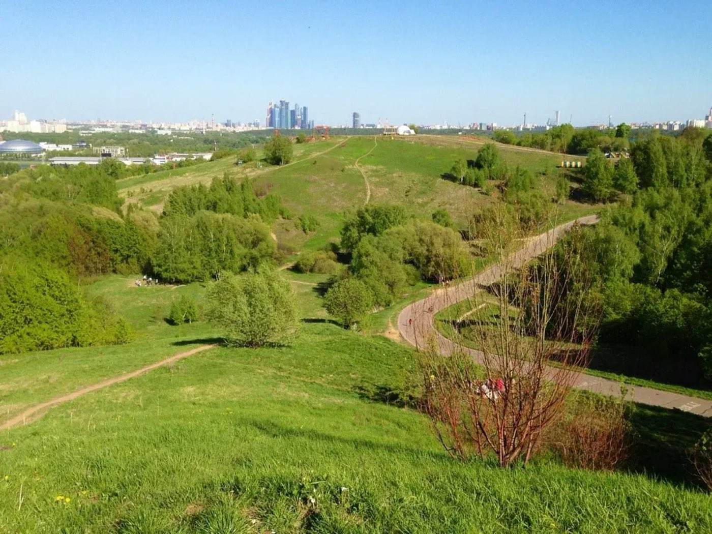
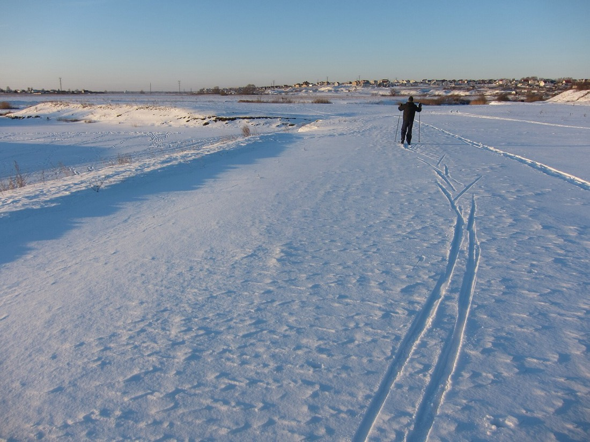
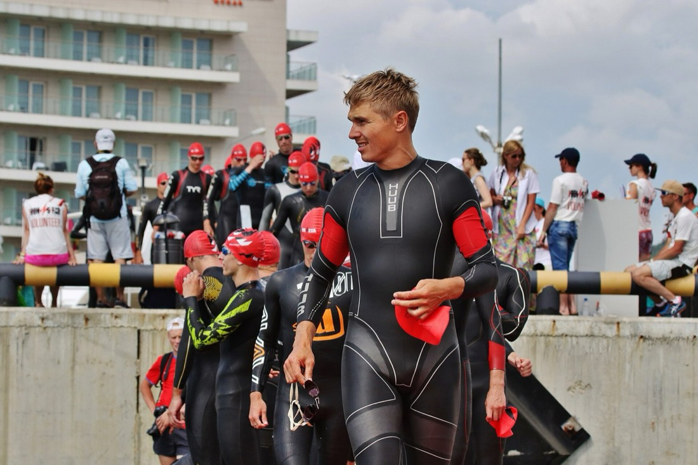
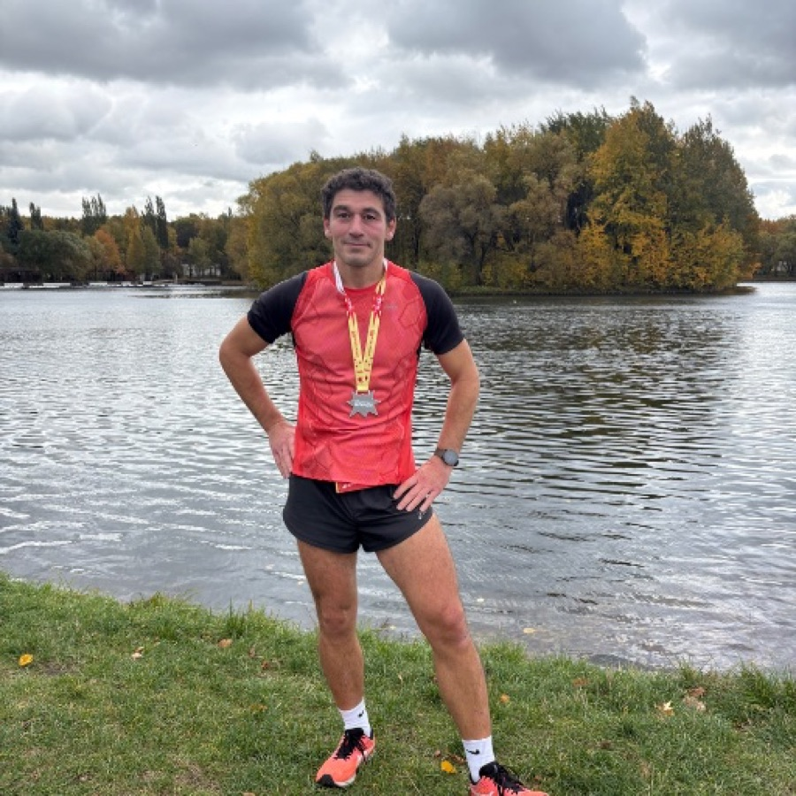

Энергия кончается к трём
Кофе вместо сна, сахар вместо обеда. К вечеру хватает только на почту и сериал.

Москва · индивидуально · 12 человек в сезоне
Индивидуальная школа циклических видов спорта для владельцев бизнеса и руководителей. Лыжные гонки, велосипед и триатлон — как система управления телом, вниманием и выносливостью в решениях. Один человек. Один план. Один тренер.
01 — кому это нужно
Узнаёте себя
Это не про вас, если
Я работаю с теми, кто готов менять не только тренировочный план, но и то, из чего складывается день.
02 — дефицит
Это не про силу воли и не про мотивацию. Это про физиологию, которую бизнес-график игнорирует годами.
Кофе вместо сна, сахар вместо обеда. К вечеру хватает только на почту и сериал.
Семь часов есть, отдыха нет. Тело просыпается уже должным.
Спина, шея, давление, вес. Сначала терпится, потом лечится, потом поздно.
Когда ресурса нет, выбираешь не лучший вариант, а наименее страшный.
Старт есть, системы нет. Через месяц всё возвращается на исходную.
О теле думаете в категории «разберусь позже». Позже — это и есть цена.
03 — инструменты
Лыжные гонки, велоспорт и триатлон — это не про «побегать для здоровья». Это дисциплина управления ресурсом на длинной дистанции. Ровно то, чего не хватает в операционном режиме.
Разница только в цене ошибки. В гонке вы теряете минуты. В жизни — годы ресурса.
04 — почему не зал
Разница не в упражнениях и не в инвентаре. Разница в том, что происходит с головой за час нагрузки. В зале вы тратите ресурс. На улице — возвращаете.
Для владельца бизнеса это не про мышцы. Это про два часа в сутках, после которых голова работает так, как должна. И про приватность: на улице нет зала с чужими людьми, нет зеркал, нет расписания — только вы, маршрут и задача.
05 — дисциплины
Начинаем с одной дисциплины, которая ближе. Дальше — по сезону. Плавание входит как часть триатлона.

Нижегородская область
Зима в Подмосковье — идеальный тренажёр выносливости: холод, рельеф, длинная дистанция. Работаем над техникой конькового и классического хода, экономией сил и сезонной базой.

Москва · набережная
Самый точный инструмент управления нагрузкой: мощность, пульс, каденс. Здесь видно всё — и перегруз, и недоработку. Шоссе, разделка, длинные выезды за город.

Сочи · Чемпионат России
Полный цикл: плавание, велосипед, бег. Дисциплина для тех, кому нужен результат, который нельзя подделать. Готовим к конкретному старту — от спринта до полной дистанции.
06 — метод
90 минут · Москва или видеосвязь
Разбираем режим, сон, питание, историю нагрузок, травмы и ограничения. Смотрим, что реально забирает ресурс. На выходе — честный ответ: нужен вам спорт или сначала врач и режим.
4–6 недель
Аэробная база, сила, подвижность, сон и еда. Никаких рекордов. Задача — вернуть телу способность выдерживать нагрузку и начать восстанавливаться.
6–10 недель
Работа под конкретную цель: старт, дистанция, рельеф, дата. План на неделю с точными зонами, объёмом и восстановлением. Всё встроено в ваш календарь, а не наоборот.
день, который нельзя перенести
Гонка, марафон, поход или личное испытание. Проверка системы на прочность — там, где видно всё, что не видно в зале.
2 недели после старта
Смотрим данные, разбираем ошибки, переносим выводы в жизнь. Дальше — новый цикл с учётом того, что изменилось.
07 — результат
Не «улучшение общего самочувствия», а конкретные вещи, которые вы заметите без дневников и замеров.
Подъём без будильника в три подхода, ровный день без провала в 15:00 и второго кофе.
Засыпание за десять минут и утро, в котором есть силы, а не только обязанности.
Спина, шея и суставы перестают быть темой для отдельного внимания. Вес приходит в норму как следствие, а не как цель.
Когда ресурс есть, выбираешь лучший вариант, а не наименее страшный.
Тренировка становится частью недели, а не подвигом. Это переносится на всё остальное.
Вы инвестируете в тело, которое понадобится вам в 60 и в 70. Это тоже капитал.
08 — форматы и стоимость
Цены — за индивидуальную работу. Групп, абонементов и скидок за объём здесь нет.
25 000 ₽
один визит · 90 минут и разбор
Лабораторное тестирование
основной формат
240 000 ₽
три месяца · 80 000 ₽ в месяц
780 000 ₽
двенадцать месяцев · 65 000 ₽ в месяц
Выезд и сборы — отдельный формат: несколько дней в горах или на трассе, работа с рельефом и высотой. Стоимость — по запросу.
Оплата цикла целиком или двумя частями. Мест в сезоне — двенадцать. Набор закрывается, когда места заканчиваются.

Арсен Брсоян · тренер, действующий спортсмен
09 — обо мне
Меня зовут Арсен Брсоян. Пятнадцать лет я тренирую людей в циклических видах спорта: лыжные гонки, велоспорт, триатлон. За это время через меня прошли сотни человек — от тех, кто впервые встал на лыжи в сорок, до спортсменов, которым нужен результат на конкретном старте.
Я основал школу «Второе дыхание» — и это моя биография, а не продукт. Здесь, на этой странице, другой формат: один человек, одно расписание, полная ответственность за результат. Без групп, без массовки, без чужих людей в зале.
Я сам выступаю. Знаю, как это — работать в графике, где неделя расписана по встречам, и всё равно выходить на тренировку. Знаю, как выглядит перегруз и как выглядит восстановление. И знаю, что первое обычно принимают за характер.
Здесь будет место для регалий и образования — их стоит указать точно, а не приблизительно.
10 — принципы
Никаких «все вместе». Только ваше время и ваш план.
График собирается под вашу неделю, а не наоборот.
Нет баллов, уровней и сгорающих занятий.
Не нужно регистрироваться и заходить в личный кабинет.
Не кричу «ты сможешь». Строю систему, в которой не нужно себя уговаривать.
Не гарантирую медали. Гарантирую точный план и честную обратную связь.
11 — вопросы
Потому что это и есть консалтинг, только про ваше тело и режим. Один человек, индивидуальный план, разбор данных каждую неделю и ответственность за результат. Двенадцать мест в сезоне — это не маркетинг, это предел, после которого качество падает.
Поздно — это когда уже нельзя ходить. Всё остальное решается базой: первые недели мы не гонимся ни за чем, а возвращаем телу способность выдерживать нагрузку. Половина моих клиентов начинала с нуля после сорока.
У вас нет времени на плохо организованную нагрузку. Минимальный рабочий объём — три-четыре часа в неделю, и он встраивается в календарь, а не вырезается из него. Если неделя провалилась — план пересобирается, а не отменяется.
На диагностике смотрим ограничения и, если нужно, отправляю к врачу до начала работы. Я не лечу и не заменяю медицину. Но грамотно построенная циклическая нагрузка — один из самых безопасных способов вернуть тело в рабочее состояние.
И так, и так. Диагностика и разборы — онлайн. Основные тренировки — в Москве: Крылатское, Воробьёвы горы, Лужники, лыжные трассы Подмосковья. Если вы в другом городе — работаем дистанционно, с вашими данными и вашим рельефом.
Ничего не сгорает. План пересобирается под поездку: в отеле, на беговой дорожке, на станке, с резинкой. Задача — не идеальная неделя, а непрерывность.
Да. Тогда основа — данные с часов или датчиков, видеосвязь раз в неделю и подробный план. Технику в этом формате ставить сложнее, но выносливость и режим — полностью решаемо.
С двадцатиминутной тренировки. Она бесплатная. На ней я задаю неудобные вопросы и честно говорю, подхожу я вам или нет. Если не подхожу — скажу прямо и, если смогу, порекомендую другого специалиста.
12 — первый шаг
Тренировка без презентаций и скриптов. Вы рассказываете, что происходит. Я задаю вопросы и говорю, что вижу. Дальше — ваше решение.
Москва · выезды по России
Заявка готова
Сайт не отправляет данные на сервер. Скопируйте текст и отправьте его удобным способом — так вы контролируете, что и кому уходит.